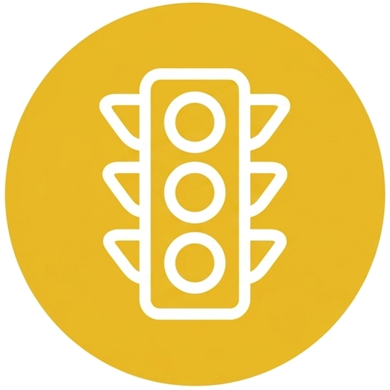
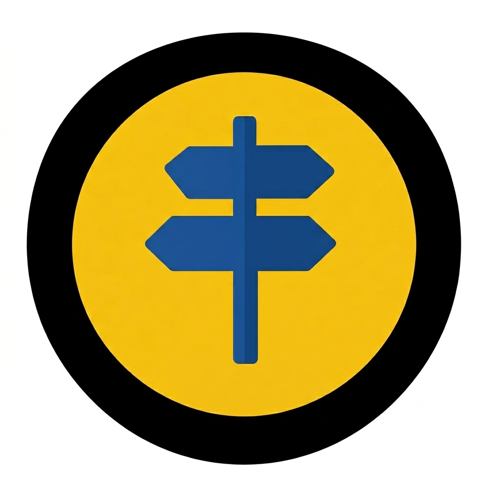

Despacho del Secretario
Formula políticas, emite actos administrativos y coordina la estrategia de movilidad del Distrito. Es la instancia superior de decisión de la Secretaría.
Unidad de Apoyo a la Gestión
Administra el talento humano, los recursos físicos, financieros y tecnológicos de la Secretaría. Es también el canal transversal de atención y gestión documental para la ciudadanía.
Oficina de Contravenciones
Adelanta los procesos jurídico-administrativos derivados de las infracciones de tránsito y tránsporte, gestiona el cobro de la cartera morosa por comparendos y sanciones.

Subsecretaría de Movilidad Sostenible y Seguridad Vial
Planea y desarrolla soluciones para mejorar la movilidad en la ciudad. Se encarga de la señalización, semáforos, estudios de tránsito, seguridad vial, planes de manejo de tráfico y proyectos que buscan hacer los desplazamientos más seguros, ordenados y sostenibles para todos los ciudadanos.
Subsecretaría de Servicios de Movilidad
Controla y regula la movilidad en las vías de Cali. Gestiona el registro del parque automotor y los trámites ante el RUNT, autoriza eventos que afecten la circulación y administra las tecnologías de control vial como cámaras y sistemas inteligentes.

Ubique el cursor sobre la dependencia relacionada y un click a su requerimiento para continuar.